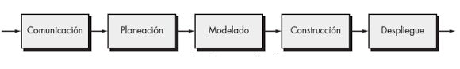
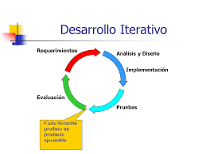
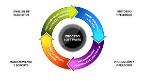
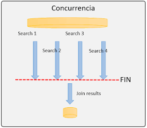

1.-Flujo linealEste se caracteriza porque las actividades del proceso de software se realizan de forma secuencial (una etapa comienza cuando la anterior haya finalizado completamente). Todas las fases dependen respectivamente de la anterior, y no se relizan retrocesos. Este flujo es sencillo de aplicar y facil de entender pero no es ideal si se quiere relizar cambios, ya que las modifiaciones puede implicar rehacer varias etapas.  |
2.-Flujo iterativoEl flujo iterativo como su nombre lo indica los procesos se repiten en ciclo o iteraciones. En cada iteracion se realizan partes del sistema completo para poder identificar opciones de mejora y evaluar posibles errores y todo esto continuamente. Este flujo tiene una gran adaptacion a cambios y tambien poder detectar tempranamente los errores.  |
3.-Flujo evolutivoAqui se crea un sistema incremnetal, el cual refiere a que se construyen versiones funcionales del sistema que van evolucionando con el tiempo, agregandole carcteristicas o mejoras respecto a su version anterior. esto nos permite mantener al usuario actualizado de los avances y asi poder tener mas retroalimentacion, lo que contribuye a construir un producto más alineado con las necesidades reales.  |
4.-Flujo concurrenteEn este flujo varias de las actividades para el sistema estan siendo ejecutadas de manera simultaneas en donde una parte del equipo trabaja diseñando una parte, otra puede estar progrmando otra seccion simultaneamente. Esto de manera adecuada nos puede ayudar a reducir el tiempo de desarrollo, pero el equipo necesita buena coordinacion para evitar conflictos y descauerdos.  |